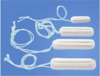
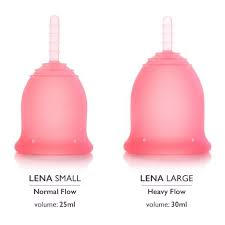

It has a sticky side that sticks to your underwear and wings if you choose to secure around the sides of your underwear
The Cons:
The pad sits outside of the body and this can be very unhygienic because the pad is made out of cotton it absorbs all moisture; this includes sweat.
Due to friction during movement can cause rashes or begin to have an odour (this is not your body or vagina or period, but the combination of sweat and fluids sitting outside the body until you change the pad).
The Tampon

The Pros
The tampon can be very small so it is easy to insert and it has a string that hangs outside of the vagina for you to be able to take it out.
The tampon is inside the body meaning it is secrete, private and no one knows you have your period.
You can sleep, play sports or swim with a tampon inside, but will need to change it directly afterwards.
The Cons:
The tampon is inserted into the vagina by either using one finger to push it up as far as possible or by using an applicator that slowly pushes and releases the tampon up into the vagina.
The tampon has a rare risk of toxic shock syndrome TSS; this is due to cotton being inserted into the vagina, absorbing all the menstrual fluids and then either sitting inside the vagina for too long (if you forget to change it or leave it in for the whole day) or because pieces of the cotton can tear off when pulling it out. Someone can also be allergic to the cotton without knowing.
The Menstrual Cup

The Pros
The menstrual cup is fast becoming in high demand and more people are finding out about it, even though it has existed for over a 100 years.
The Pros:
The menstrual cup is also inserted into the vagina so it is private and no one knows you have your period.
It does not cause friction as it is inside the vagina and not against it.
Because it is inside and not absorbing you can wear it for up to 8 or 12 hours before needing to change it (depending on make and size of the cup).
You can swim, sleep, play sports and be active and use the toilet with the menstrual cup inside.
The menstrual cup is reusable for 5 – 10 years (depending on the cup) and this has a massive decrease in the impact on the environment compared to tampons and pads.
The Cons:
The menstrual cup needs to be inserted and some people are not comfortable with needing to touch their vagina as well as some cultures do not allow the insertion of anything into the vagina.
When changing the menstrual cup you will either need clean running water to rinse it or toilet paper as you need to make sure it is clear of any fluids before reinserting the menstrual cup. (No cleaning products or detergents or soaps to be used at all).
MYTHS: Neither the tampon nor the menstrual cup can break your virginity as neither has anything to do with sexual intercourse.
The tampon and the menstrual cup are not hard enough to break the *hymen and the menstrual cup does not sit high enough. The tampon nor the menstrual cup are contraceptives nor protection! (It cannot protect you against sexually transmitted diseases nor pregnancy and it has to be taken out before having any sexual intercourse).